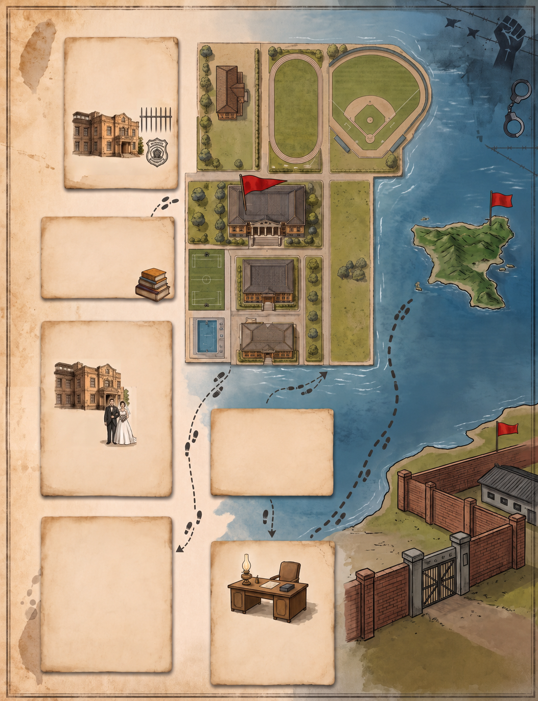

點擊地圖上閃爍的紅點，解鎖檔案紀錄。

經校長王石安邀請、建議、成任館共崗科副教授。
與吳聲達、黃祖權等同事宿舍，常以日文交流中同事情誼。
黃祖權借來燕尾服，劉涅貞借來賣尾華置孅帶布新新家。
以幽默嘲諷語氣迅公告訃評治政府查禁書新毀撼政策，後進情清單位記與簡單記錄，後列日常天列的搜疊輔會位記後的證據之一。
線民丘同德學報台中院好評組織名列單之名，逮捕偵訊。
筆錄中出現一份情節造奇的自白書，相較閹出現其他的是捏造的。
1951年被押送，絕亞熏到對風第十的蹣元不能努力犧牲，因病獲釋。
1953年樹檻的轉變，進入監抗刑波，一時間陰濕，艱寂刑壞人。